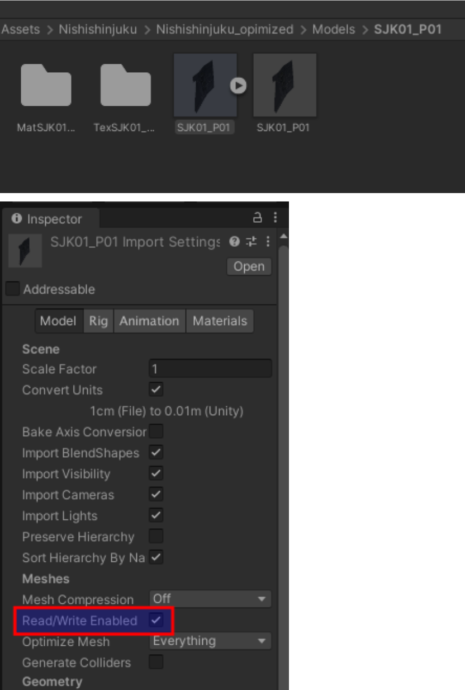

RGLUnityPlugin
Robotec GPU Lidar (RGL) is an open source high performance lidar simulator running on CUDA-enabled GPUs.
It is a cross-platform solution compatible with both Windows and Linux operating systems.
RGL utilizes RTX cores for acceleration, whenever they are accessible.
RGL is used in AWSIM for performance reasons.
Thanks to it, it is possible to perform a large number of calculations using the GPU, which is extremely helpful due to the size of the scenes.
AWSIM is integrated with RGL out-of-the-box - using RGLUnityPlugin asset.
Warning
If you want to use RGL in your scene, make sure the scene has an RGLSceneManager component added and all objects meet the usage requirements.
Concept
Describing the concept of using RGL in AWSIM, we distinguish:
-
Mesh - a handle to the on-GPU data of the 3D model of objects that in AWSIM are provided in the form of Mesh Filter component.
RGLUnityPluginsupports two types of meshes: static (rendered by Mesh Renderer) and animated (rendered by Skinned Mesh Renderer). Static meshes could be shared between Entities. -
Entity - represents a 3D object on the scene with its position and rotation. It consists of a lightweight reference to a Mesh and a transformation matrix of the object.
-
Scene - a location where raytracing occurs. It is a set of entites uploaded by
SceneManagerscript to the RGL Native Library. -
Node - performs specific operations such as setting rays for raytracing, transforming rays, performing raytracing, and manipulating output formats. In AWSIM, the main sequence of
RGLnodes that simulates LiDAR is created in theLidarSensorscript. Other scripts usually create nodes to get requested output or preprocess point cloud, and then connect those nodes to theLidarSensor. -
Graph - a collection of connected Nodes that can be run to calculate results. It allows users to customize functionality and output format by adding or removing Nodes.
Producing a point cloud is based on the use of a Scene containing Entities with Meshes, and placing an Ego Entity with LiDAR sensor that creates a Graph describing ray pattern and performing raytracing.
In subsequent frames of the simulation, SceneManager synchronizes the scene between Unity and RGL, and LiDAR sensor updates rays pose on the scene and triggers Graph to perform raytracing and format desired output.
Package structure
RGLUnityPlugin asset contains:
- Plugins - dynamically loaded libraries for Windows and Linux (
*.dlland*.sofiles). - Resources - visualization shader and material.
- Scripts - scripts for using
RGLin the Unity - details below.
Scripts
SceneManager- responsible for syncing the scene between Unity andRGL.LidarSensor- provide lidar configuration and createRGLpipeline to simulate lidar.PointCloudVisualization- visualize point cloud on the Unity scene.IntensityTexture- adds slot forIntensity Texture IDto the GameObjectSemanticCategory- adds category ID to the GameObjectRGLDebugger- provides configuration for NativeRGLdebug tools (logging and tape).- A set of classes providing tools to define LiDAR specification (mostly: ray poses):
LidarModels- enumeration of some real-world LiDARs names.LidarConfiguration- top-level configuration class, horizontal ranges, distance range, laser array.LidarConfigurationLibrary- provides a number of pre-definedLidarConfigurations.LaserArray- definition of a (vertical) array of lasers.LaserArrayLibrary- provides a number of pre-definedLaserArrays.Laser- describes offsets of a single laser within aLaserArray.LidarNoiseParams- describes a LiDAR noise that can be simulated
LowLevelWrappersscripts - provides some convenience code to call NativeRGLfunctions.Utilitiesscripts - miscellaneous utilities to make rest of the code clearer.
SceneManager
Each scene needs SceneManager component to synchronize models between Unity and RGL.
On every frame, it detects changes in the Unity's scene and propagates the changes to native RGL code.
When necessary, it obtains 3D models from GameObjects on the scene, and when they are no longer needed, it removes them.
Three different strategies to interact with in-simulation 3D models are implemented.
SceneManager uses one of the following policies to construct the scene in RGL:
Only Colliders- data is computed based on the colliders only, which are geometrical primitives or simplified Meshes. This is the fastest option, but will produce less accurate results, especially for the animated entities.Regular Meshes And Colliders Instead Of Skinned- data is computed based on the regular meshes for static Entities (withMeshRendererscomponent) and the colliders for animated Entities (withSkinnedMeshRenderercomponent). This improves accuracy for static Entities with a negligible additional performance cost.Regular Meshes And Skinned Meshes- uses regular meshes for both static and animated Entities. This incurs additional performance, but produces the most realistic results.
| Mesh Source Strategy | Static Entity | Animated Entity (NPC) |
|---|---|---|
Only Colliders |
Collider | Collider |
Regular Meshes And Colliders Instead Of Skinned |
Regular Mesh | Collider |
Regular Meshes And Skinned Meshes |
Regular Mesh | Regular Mesh |
Mesh source can be changed in the SceneManager script properties:
Performance
SceneManager performance depends on mesh source option selected.
Usage requirements
Objects, to be detectable by RGL, must fulfill the following requirements:
- Contain one of the components:
Collider,Mesh Renderer, orSkinned Mesh Renderer- it depends onSceneManagermesh source parameter. -
Be readable from CPU-accessible memory - it can be achieved using the
Read/Write Enabledcheckbox in mesh settings.Readable objects
Primitive Objects are readable by default.
Example
The activated Readable option in the mesh should look like this.
